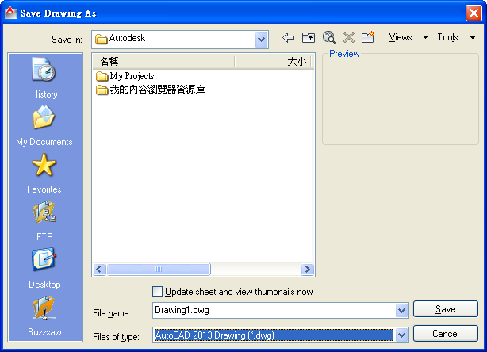

AutoCAD 2013將使用一個新的DWG格式，將在2012年發佈新的DWG格式，AutoCAD計劃的發行2013版本。
因此我們可以在一年左右期待DWG格式變動(在AutoCAD 2013)。 這遵照Autodesk計劃改變DWG文件格式每每3年發行一個新的dwg格式。
AutoCAD 2010文章引用:http://autocadder.blogspot.com/2008/04/autocad-2010-will-use-new-dwg-format.html
各位AutoCAD的用戶其實不用太擔心新版本格式問題！
依照以往的經驗AutoCAD將會提供2013版本的轉檔程式～
所以當收到高階版本產生的格式仍然可以透過轉檔程式來轉成低階版本。
而在AutoCAD基礎指令方面仍然不會有變化！
所以你依然可以自由的使用AutoCAD 2013的版本，也可以透過「工作區」還原舊式的操作介面～
建議可以多多使用新功能增加職場競爭力～
目前知道的功能應該會在AutoCAD 2013加入[新功能]Nucleus 建模插件！
目前AutoCAD 2013檔案版本的檔案壓縮率最佳，也就是說儲存過檔DWG檔案最小，相關檔案版本格式說明，請大家看以下文章說明～
[說明]AutoCAD版本
[說明]查看AutoCAD圖檔格式